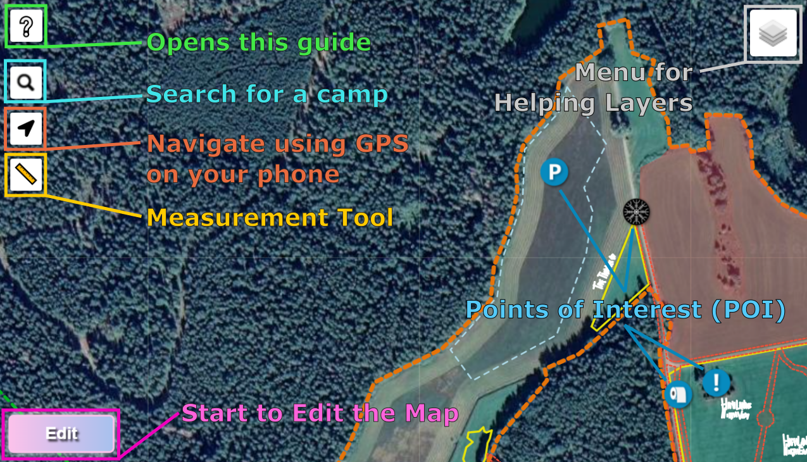
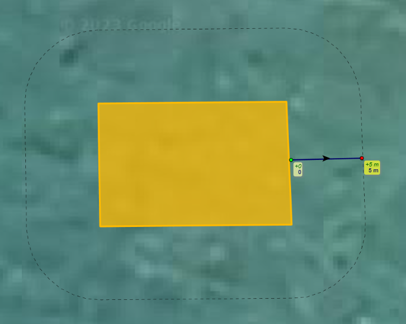

What and why is the Placement Process?
Hello! You are here because you are going to place your camp somewhere at The Borderland! The placement process is a important part in co-creating The Borderland. This is where we all get to decide what goes where! It's also here to make us follow some basic rules so that we can all be safe (mainly fire regulations). For specific questions scroll down to the FAQ.
The map of Borderland is not done, but with your help it can be! The placement process is indeed a process.
Nothing is final just because you were first to claim a spot, even though chances are probably higher.
Its a co-created dance where we sculpt this blob of creative clay together to form something amazing.
The Placement Process is here because of a few reasons:
- Support co-creation
- Make it possible to plan large projects ahead of time
- Make the logistics on site manageable
- Foresee eventual problems beforehand
When the process starts, you will be able to draw your camp on the map according to the instructions below: 
How to use the Placement Tool
- Click the "Edit" button in the lower left
- Start drawing a shape and close it by clicking on the first point
- Fill in all fields, including power and amplification (see guide below if unsure)
- Pay attention to how much space it says is needed depending on how many people you say your are in tents contra vehicles. Other stuff in m² means anything else, like kitchen tents, domes, artwork, chill spaces etc.
- Click "Ok!". Now you can click "Edit shape" to adjust your camps shape a bit more, move it or go back to edit the info.
- Done! You have placed your camp at The Borderland! Now go to Discord and talk with your neighbors about how and if you want to coordinate. Maybe you want to create a street somewhere, a square or whatnot. Be creative!
While editing your shape, pay attention to the thin dotted black line around your shape. That is the "fire buffer", and is drawn 5 meters away. This is here to guide you to make enough separation between camps or clusters of camps.
Extra layers and measure tool!
Make sure to check out the slopemap, soundmap, heightmap and a bunch of other layers in the top right menu!


There is also a measure tool in the upper left. This even works _while_ editing, if you wanna do some advanced planning!


What are the placement rules?
- Max size for one area or a group of areas is 1250m²
- If an area is bigger than that, it must be placed 5m away from another area
- You can not place your camp outside our lands border
- You can not place your camp on a fire road
- You must fill in all info fields. Contact info is important! Without it, your area might be removed.
- Don't make unnecessary large or too small camps in comparison with how many people you are there
- Place your camp inside the placement areas (yellow borders)
- Don't place your camp in a slope
- Don't make your camp smaller than the suggested size
- Don't play louder than the soundguide suggests
Not permitted:
Warnings:
Recommended:


To the left everything is cool, we have 5m fire roads between areas. To the right, the lower area gets too close to the others, forming a supercluster that is bigger than 1250 m2!

Here we have an orange area that is missing some info. Fill in all the info to get rid of the orange color. To the right we have an area that is touching a fire road. Move it away to make a fire fighter a happy fire fighter!
What to consider when placing your camp
There are many things to consider when placing your camp. Here are some examples:
- Ask for help if overwhelmed! Discord is the quickest way.
- Talk with your neighbours! Planning a neighbourhood together can be real fun and create all kinds of awesomeness!
- Placing more public dreams and activites facing outwards to roads, and more private areas behind that can be nice.
- Are you a loud or silent/chill camp? Look at the soundmap to be guided where you might best fit in!
- Be guided by the suggested size, but feel free to make a more detailed plan and just use the "Other m2" if needed.
- Think about how closeness to water and toilets will affect you. If you are far away, bring a bike and trolleys.
Basic fire rules
- Inside your camp normal tents for living do not need separation.
- Larger structures, kitchen tents, RVs and vans need 4 meters between them and something else that can burn.
- All camps should have at least one fire extinguisher.
- The fire roads outside your camp or your camp cluster must be kept clear at all times.
Basic sound agreements
- Look at the soundguide layer on the map
- Read the soundguide
- Follow the recommmended levels and curfews and everything will be easier
FAQ
Can I only make one shape?
No, you can make more shaped if you need to! It can even be good to differentiate between your camps camping and living areas and your more "public facing" activities and dreams.
The fire roads are blocking my plans! Can we change them?
A lot of care and thought has gone into the fire road placement, and they are required to be present. However, if you have a good reason to change them, please raise the topic on Discord or Talk and we can discuss it.
Do I have to fill in contact info?
Yes, its important for others to be able to communicate with you! Also, if your camp needs to be moved due to some unforseen fire road adjustment, you might want to be notified...
How am I supposed to set up camp in real life??
You will have to carefully measure from the main fireroads, that will be marked beforehand by a group of people (Help needed!). Bring a measuring tape, and a string. Use the measure tool in the map to get the right distances. We will add some named "control points" both to the map and in reality, to help out when far away from fire roads.
It's a very long way to the toilets on the far end of the field!!
Yes indeed it is! Place yourself closer to the toilets if you don't want to walk that far. Pooing in the bushes is a no-no and you will be eaten by the Narwhals if you do. You could also organize extra toilets in the field if that tickles your fancy.
What is The Borderland Shuffle?
It's when we mess up the placement and have to move everything around. It's a lot of work and a lot of fun.
The map is not the territory, people often confuse models of reality with reality itself you see (see Alfred Korzybski).
But I don't have a camp, how do I proceed?
If you want to join a camp you can look for a camp with open spots. There's a list of camps at Borderland 2023 Camp Overview, but you can also ask on the Discord channel 😻camp-matchmaking, or have a look in the Facebook group The Borderland Camp Matchmaking Agency.
I will go and create my own camp, but with blackjack and hookers...
Great! Make sure to pick a spot for it in the placement map. And if you seek members, spread the word in the above channels.
I'm so radical and self-reliant that I don't belong in a camp!
The concept is called freecamping and if you're taking up somewhat of a space that could be taken by other camps you should also use the placment process.
Some freecampers still do cooking together and reserve a bigger area for freecampers, feel free to find other freecampers at the Discord channel 🐺freecampers-cartel for further information.
My question was not answered here!
Oh my! Go to the Discord channel ⛳placement-general, and ask it there! Maybe someone has an answer.
The Borderland Placement Tool was based on Leaflet. Please give them your support!